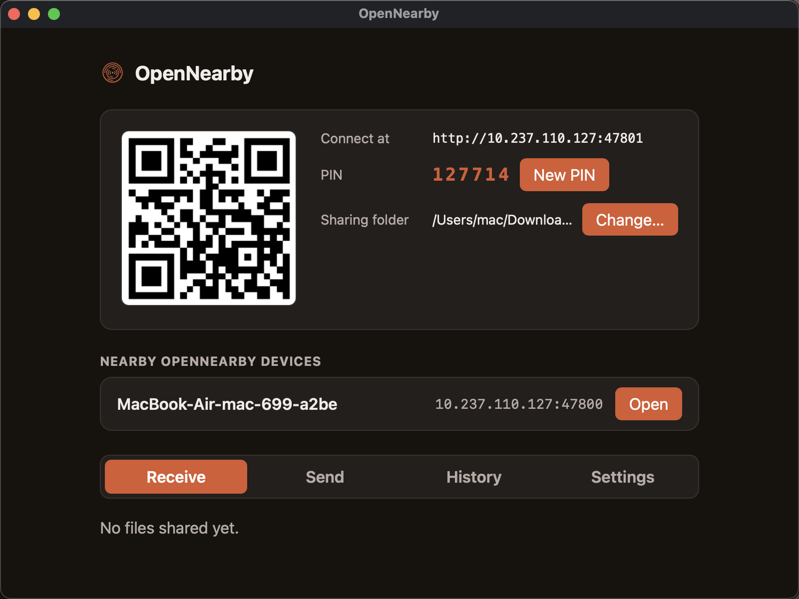
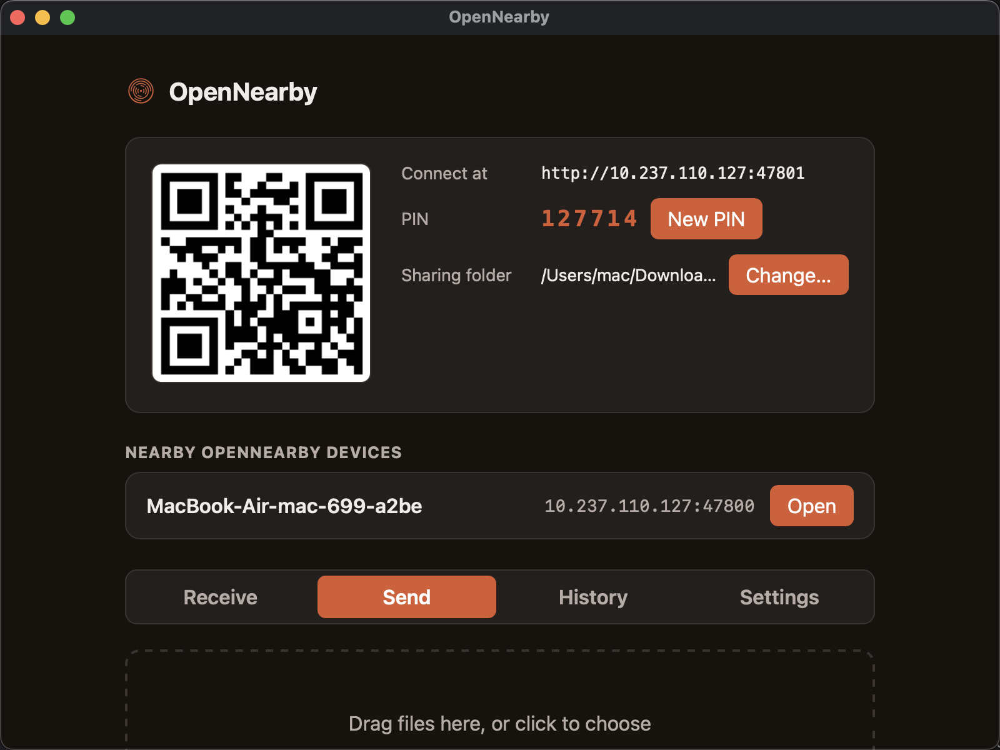
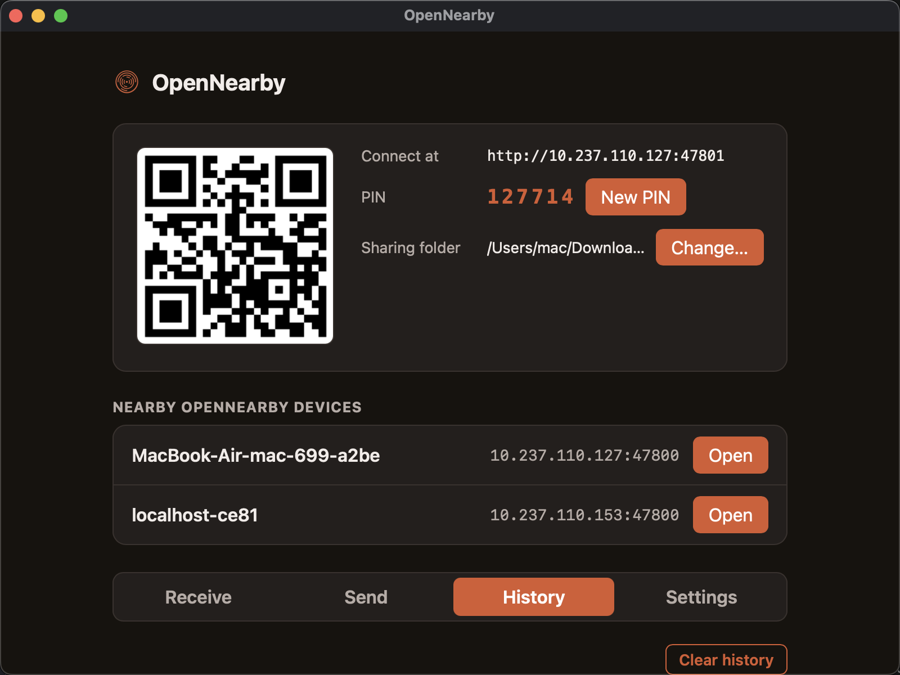
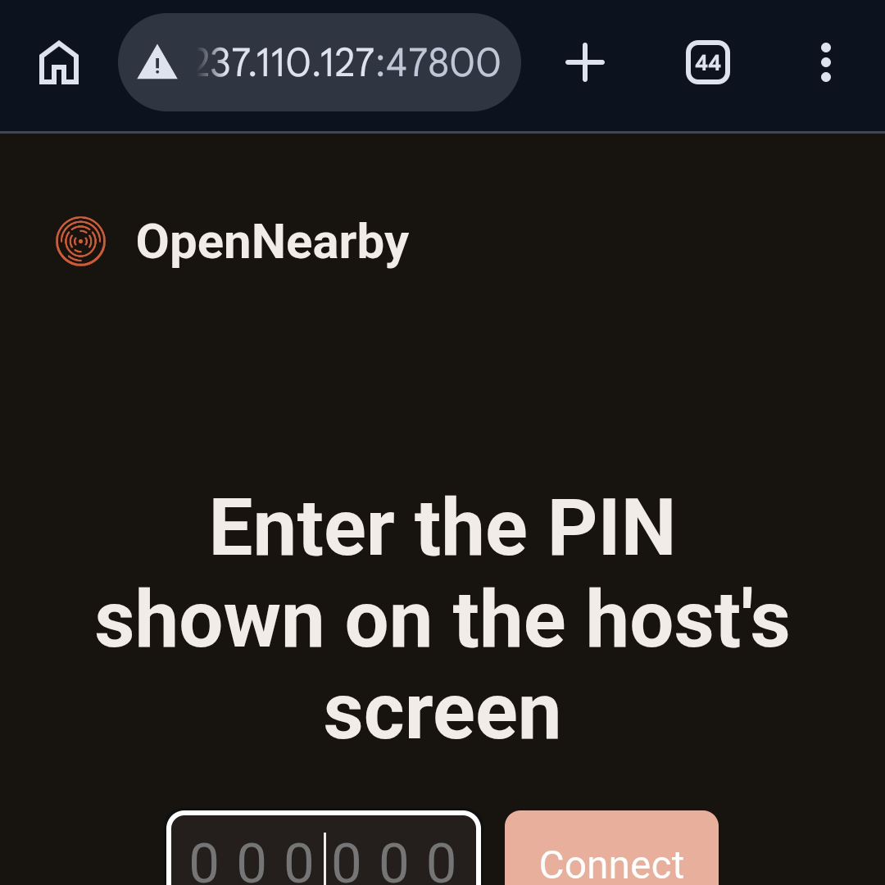
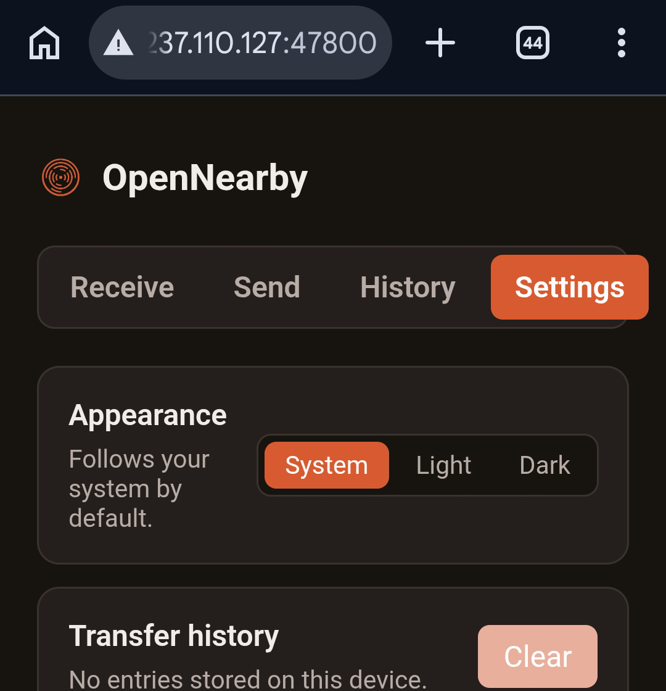
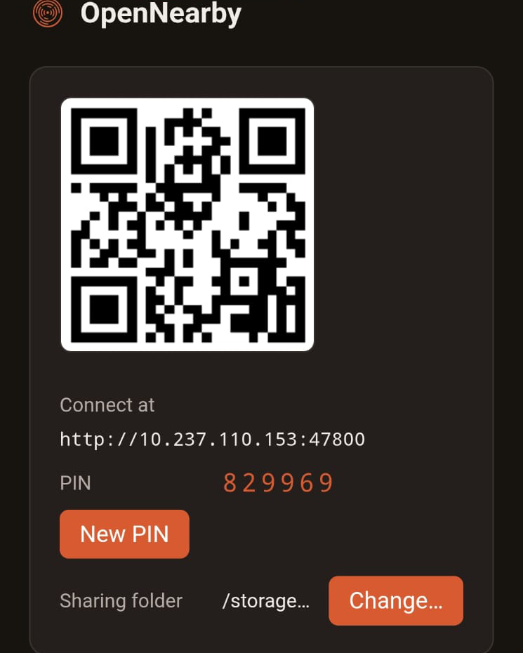
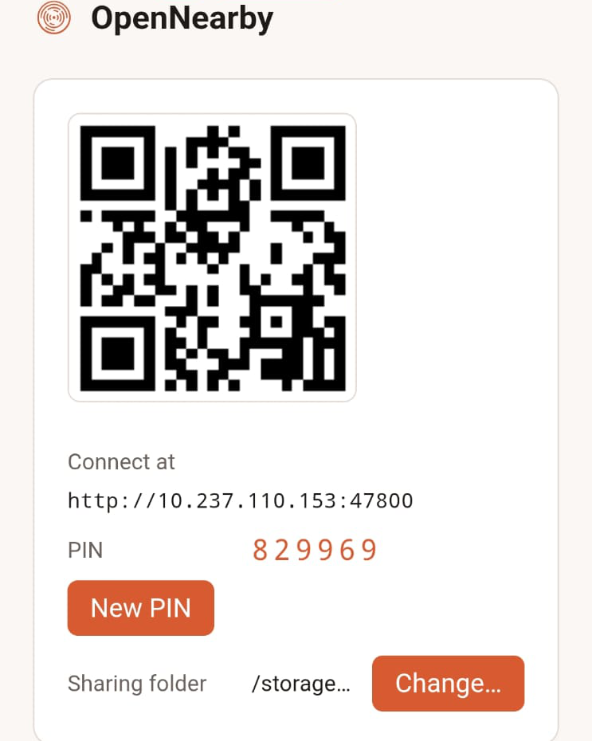

OpenNearby moves files between devices on the same WiFi at full network speed no cloud, no account, no signaling server ever standing in the middle. The host is one lightweight install; guests just open a browser, nothing to install at all.

Why OpenNearby
One running process is both the native host and the browser server — no signaling server, no cloud, ever, by default.
Files travel straight over your LAN. No relay server, no upload, no account required — by default, and non-negotiably.
Any phone or laptop on the same WiFi opens http://<lan-ip>:port or scans a QR code — same UI, no app store, no download.
Two OpenNearby installs on the same network find each other automatically — no typing IP addresses, no pairing dance.
A random 6-digit PIN gates every new device before it can browse or upload — shown right next to the QR code, changeable anytime.
Drag-and-drop upload and one-click download both show real percentage progress, not just a spinner.
Native builds for macOS (Apple Silicon), Windows, and Linux, plus an Android app for share-sheet sending to a desktop host. Don't want to install anything at all? Any device with a browser — iOS included — can join as a guest with zero install.
A look inside
The host panel, the drag-and-drop send zone, and per-device transfer history.


On a phone — no app needed
Guests just open the link or scan the QR code. Same PIN gate, same UI, straight in the browser.


Or the native Android app
For share-sheet sending to a desktop host, in either theme.


Under the hood
A Rust axum server binds to 0.0.0.0
inside the Tauri process and serves the same static frontend to the desktop webview and to every LAN browser guest.
The desktop app spins up a local HTTP server and mDNS advertisement — no setup, no ports to forward.
A QR code and a plain http://ip:port link cover browser guests; mDNS covers other OpenNearby installs.
The guest enters the 6-digit PIN once; the server replies with a session cookie so downloads work like normal link clicks.
Browse and download the host's shared folder, or drag files in to upload — both with live progress.
Design principles
Learned from watching other LAN-sharing tools quietly change their data path.
No cloud relay, no analytics phoning home, no signaling server for LAN discovery — by default, period.
mDNS discovery and the LAN HTTP server never depend on internet access to function.
Any future relay or remote-access feature will be clearly labeled and off by default — never a silent default change.
Get started
Pick your platform. Every build is free, and the source is right there on GitHub.
xattr -cr /Applications/OpenNearby.app once.
OpenNearby is MIT-licensed. Read the code, file an issue, or send a pull request — it's all on GitHub.